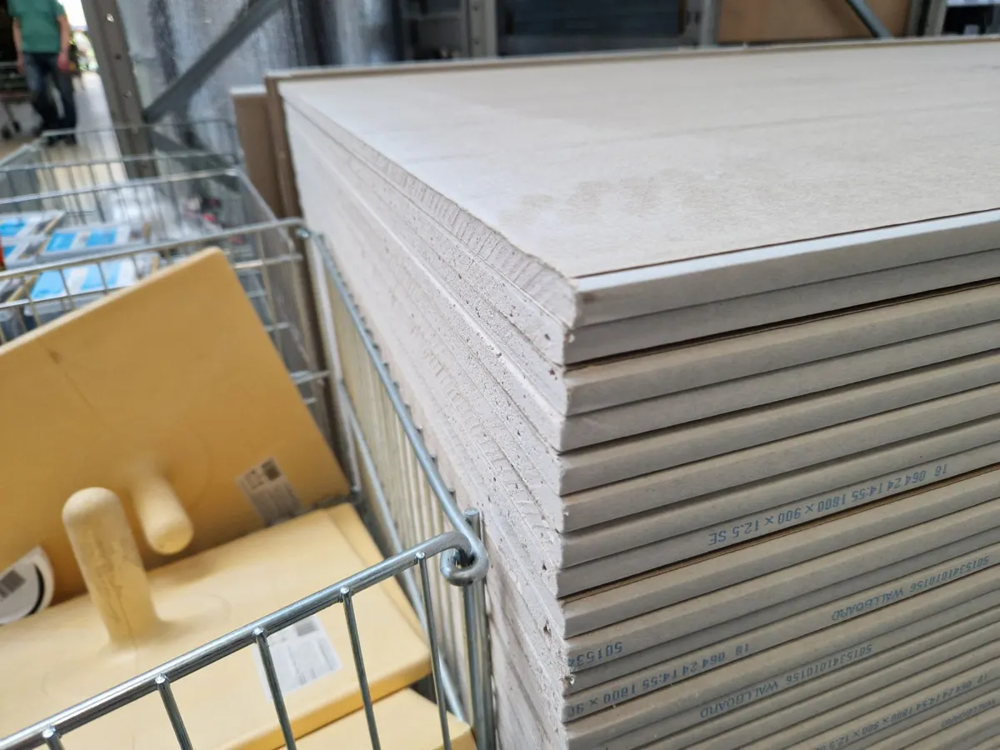
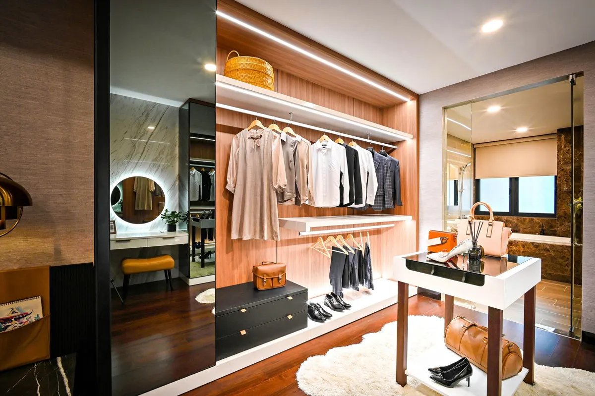

● Presupuesto sin cargo Durlock Obra rápida y limpia
Construcción en seco
Vos lo imaginás, nosotros lo hacemos realidad.
Cielorrasos, tabiques, revestimientos y muebles en Durlock. Pasanos las medidas y te armamos el presupuesto sin cargo.
Medí y pedí presupuestoLo que hacemos en seco
Tocá un trabajo para medirlo y pedir el presupuesto.
Fotos ilustrativas.
[ 02 ] Medí tu trabajo
Pasá las medidas, te lo dibujamos.
Elegí el trabajo y cargá las medidas aproximadas: el dibujo muestra la estructura y cuántas placas lleva más o menos. Con eso te pasamos el presupuesto sin cargo.
[ 03 ] Cómo trabajamos
De la idea a la pared terminada.
- 01
Nos escribís
Qué querés hacer, las medidas y, si podés, fotos del lugar.
- 02
Presupuesto sin cargo
Te pasamos el presupuesto del trabajo, sin costo y sin compromiso.
- 03
Estructura y placas
Armamos la estructura de perfiles de acero y la cubrimos con placas de yeso.
- 04
Terminación
Masillado y lijado de juntas, listo para pintar o para la terminación que elijas.

¿Por qué en seco?
- Más rápidoSin ladrillos ni tiempos de fragüe: se arma y se termina en días.
- Más limpioCasi sin escombros ni polvo de demolición en tu casa o tu local.
- Más livianoNo carga la estructura: ideal para dividir, bajar techos o sumar un ambiente.
- Instalaciones adentroLos caños y cables pasan por dentro de la estructura, sin romper.

[ 04 ] A medida
El mueble que entra justo.
Vestidores, bibliotecas y muebles empotrados, hechos a la medida del hueco que tenés. Contanos ancho, alto y cómo lo querés usar.
Medir mi mueble[ 05 ] Preguntas
Lo que más nos preguntan.
¿El presupuesto tiene costo?
No. El presupuesto es sin cargo.
¿Qué trabajos hacen?
Cielorrasos fijos y desmontables, tabiques y divisiones, revestimientos, muebles, vestidores y bibliotecas, taparrollos, cajones y falsas vigas.
¿Fijo o desmontable?
El fijo es de placa continua: queda liso y se pinta como cualquier techo. El desmontable lleva una grilla con placas que se levantan, para llegar a las instalaciones de arriba; es muy común en oficinas y locales.
¿Qué tengo que mandar?
Qué trabajo querés hacer, las medidas aproximadas y, si podés, fotos del lugar. Con el medidor el mensaje sale armado por WhatsApp.
Presupuesto sin cargo